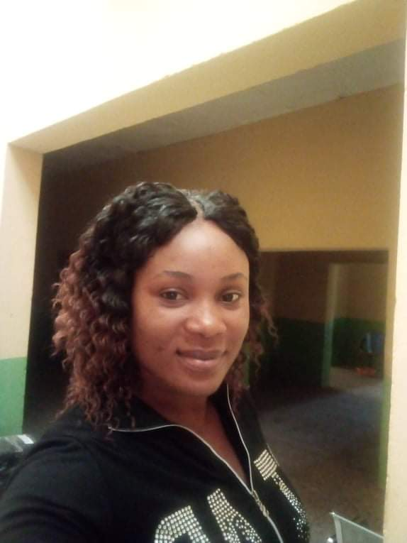
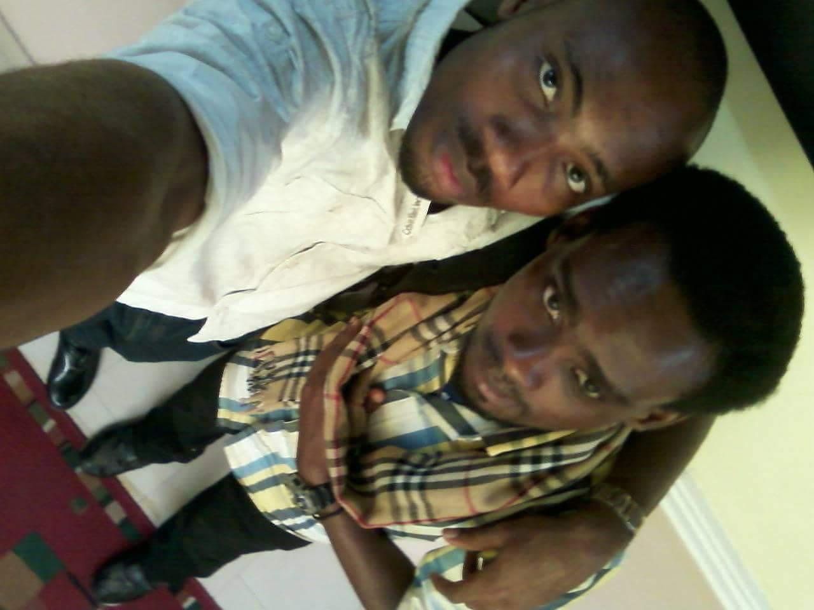

Target Audience
Our target audience are primarily City residents, the local business owners, entrepreneurs, business professionals, local universities, and investors, and everyone who wants to contribute in the growth of our development of the city.
Personas
Ekanem Effiom
Ekanem Effiom is a general contractor with more than 5 years of experience.
She is 27 years old and has simplified the art of home / industrial cleaning and event management.
She graduated from University of Calabar with a business degree, and founded a event management and cleaning
company named "Ediye's Event". As a general Contractor she uses her phone a lot, but has access to a tablet,
and her laptop as well.

Mesembe Ambo
Mesembe Ambo is a professional photographer based Port Harcourt.
He is very passionate about his work. Mesembe learned the art of photography at the age of 10
from his uncle and photography has become his life's calling. He has opened his own studio and and
also covers events when contracted to do so.
He is 30 years old now and has an average income of $50,000 year.
He is a very well known photographer. He mainly uses his camera, cell phone and laptop
for his work, and is constantly traveling due to his high demand.
Also, he is constantly seeking opportunities to improve himself in photography. He loves spending time
with friends and family, standing outdoor, and being close to nature.
